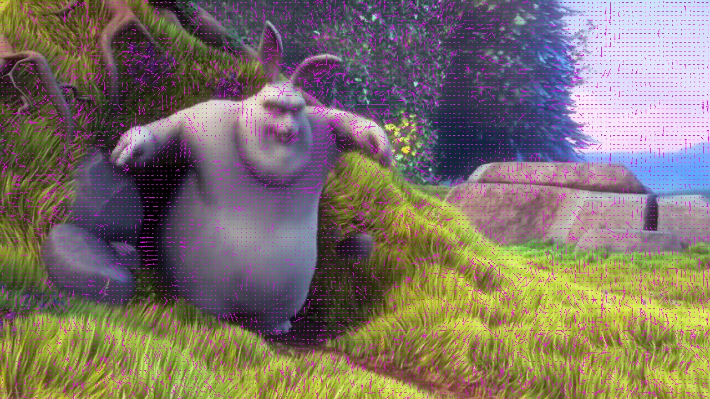
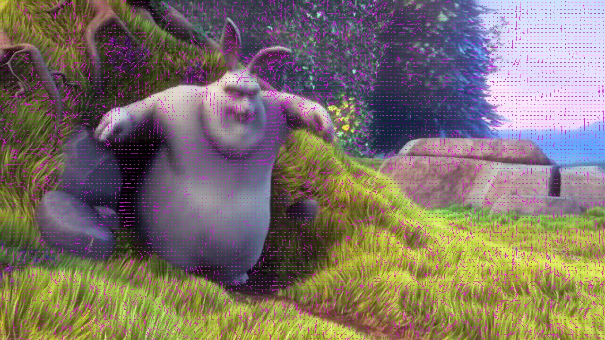
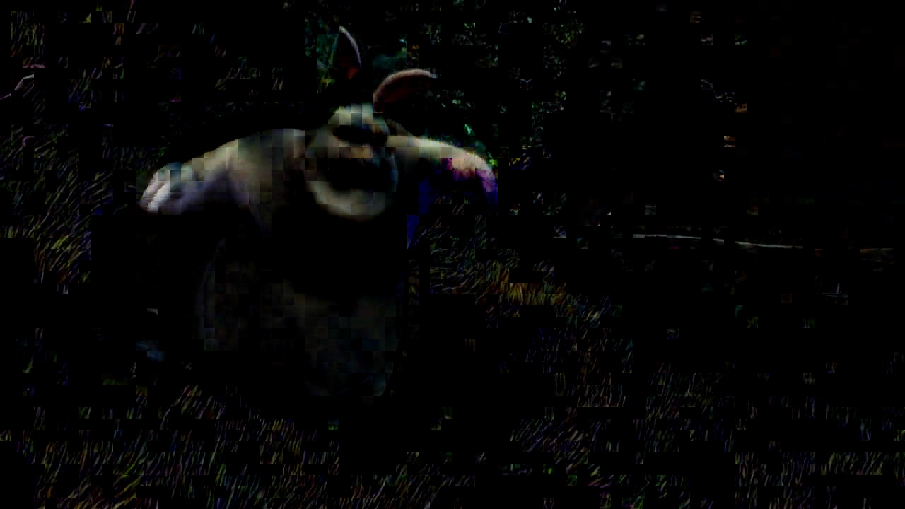
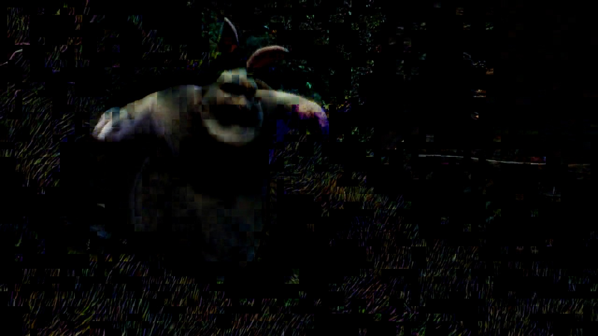
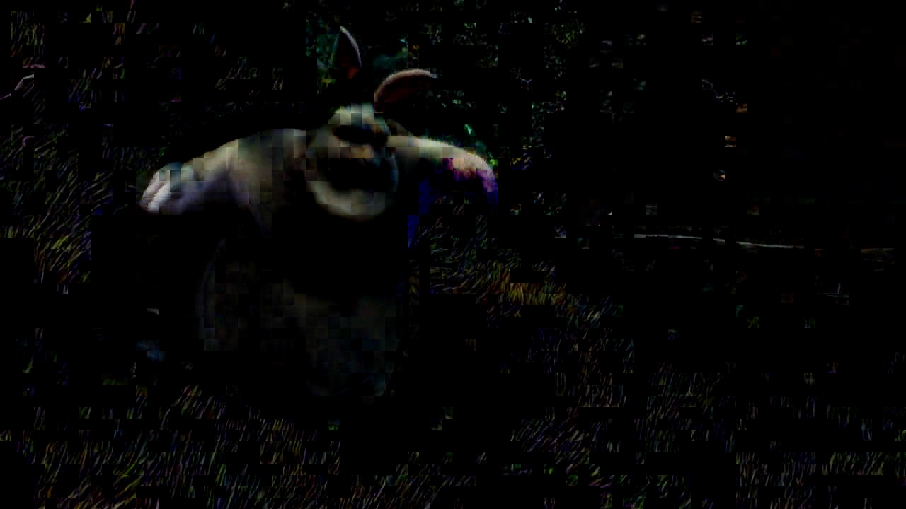
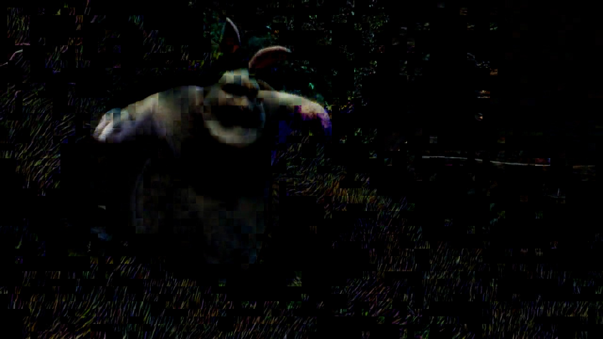
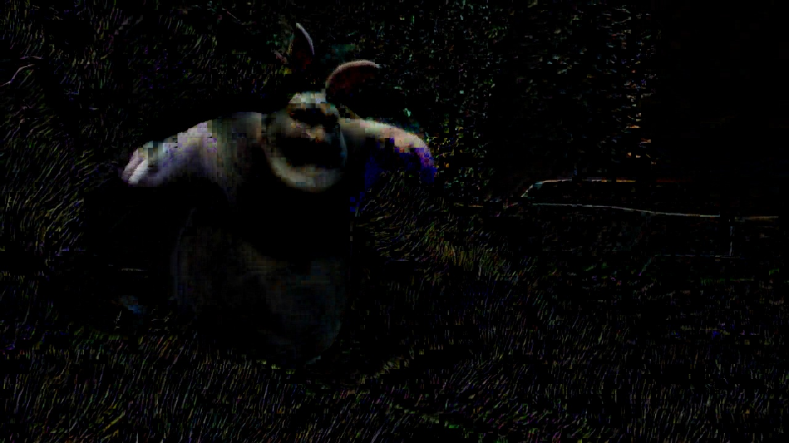
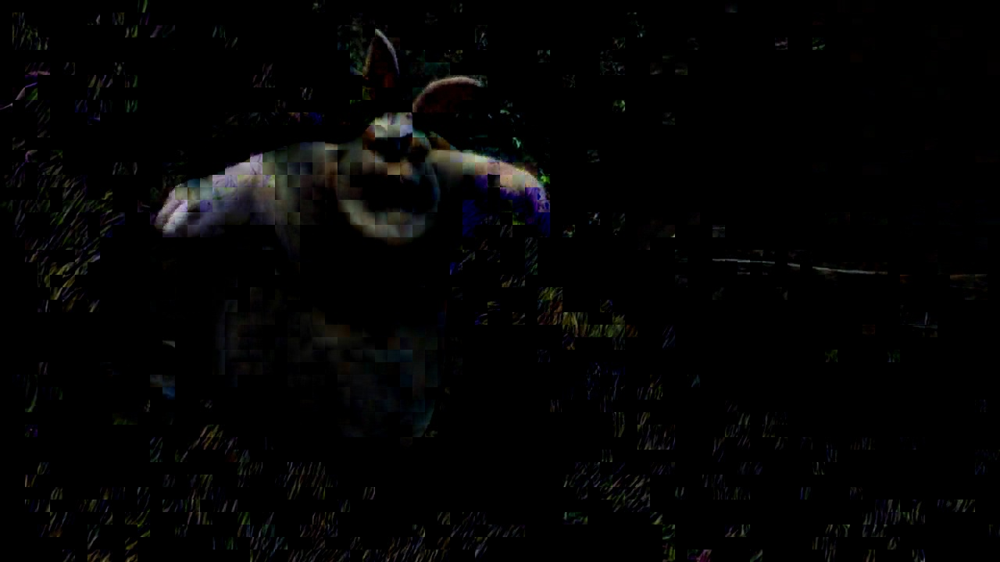
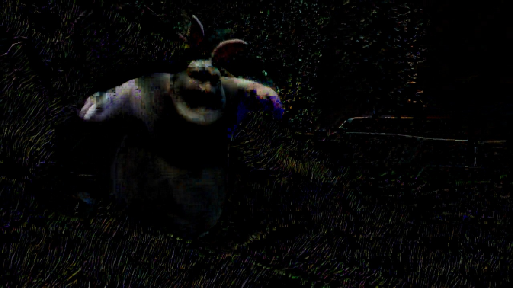
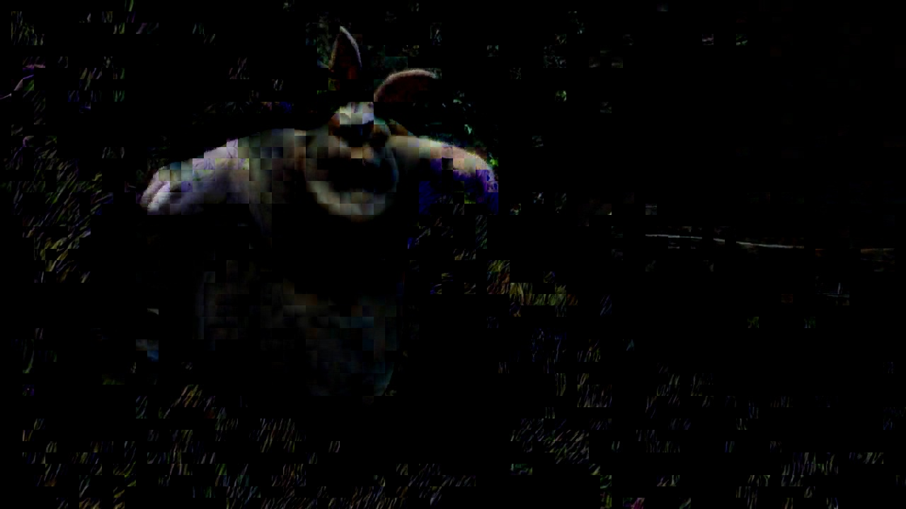

108062119 鄭幃謙
Implementation
def fullSearch(tar, ref, row, col, searchRange):
best = None
minSAD = np.inf
for i in range(-searchRange, searchRange + 1):
for j in range(-searchRange, searchRange + 1):
if 0 <= row + i < ref.shape[0] and 0 <= col + j < ref.shape[1]:
nowSAD = calSAD(ref[row + i, col + j], tar[row, col])
if nowSAD < minSAD:
minSAD = nowSAD
best = (i, j)
return np.array(best)
full search的做法較單純，在search range內的blocks中找到SAD最小的作為結果。
def logSearch(tar, ref, row, col, searchRange):
best = None
minSAD = np.inf
step = searchRange // 2
center = (0, 0)
while step >= 1:
for i in [-step, 0, step]:
for j in [-step, 0, step]:
if i * j != 0 and (i != 0 or j != 0):
continue
if 0 <= row + center[0] + i < ref.shape[0] and 0 <= col + center[1] + j < ref.shape[1]:
nowSAD = calSAD(ref[row + center[0] + i, col + center[1] + j], tar[row, col])
if nowSAD < minSAD:
minSAD = nowSAD
best = (i, j)
center = updateCenter(center, best, row, col, ref.shape)
best = (0, 0)
step //= 2
for i in [-1, 0, 1]:
for j in [-1, 0, 1]:
if 0 <= row + center[0] + i < ref.shape[0] and 0 <= col + center[1] + j < ref.shape[1]:
nowSAD = calSAD(ref[row + center[0] + i, col + center[1] + j], tar[row, col])
if nowSAD < minSAD:
minSAD = nowSAD
best = (i, j)
center = updateCenter(center, best, row, col, ref.shape)
return np.array(center)
2d-logarithmic search的做法差別在於移動的center，每一輪中只檢查上下中左右五個blocks，找到最相近的更新center並縮小搜尋範圍後繼續。最後再從最近的9個block中找出最終結果。
Result
 



 





 




SAD and PSNR values

Result


PSNR value
SAD: 19796761, PSNR: 31.6623
與full_r8_b8相比，其實只略差一些。可見full search效果很好。
Time complexity
full search的time complexity應為 O(p2)，而2d-logarithmic search的time complexity應為 O(log(p))，p為search range。
Execution time